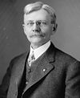

From today's featured article

Thomas R. Marshall (March 14, 1854 – June 1, 1925) was a Democratic politician who served as
the 28th Vice President of the United States from 1913 to 1921. As the 27th Governor of
Indiana, he proposed a new, controversial state constitution and pressed for other Progressive
Era reforms. His popularity as governor, and Indiana's status as a critical swing state, helped him
secure the vice presidential nomination on a ticket with
Woodrow Wilson in 1912 and win the general election. During World War I, after a small number
of anti-war senators kept the Senate deadlocked by refusing to end debate, Marshall led the body
to adopt its first rule allowing filibusters to be ended by a two-thirds majority vote. After a stroke
incapacitated Wilson in October 1919, many cabinet officials and Congressional leaders urged Marshall
to become acting president, but he refused to forcibly assume the presidency for fear of setting
a precedent. Well known for his wit and sense of humor, he once quipped during a Senate debate, "What
this country needs is a really good five-cent cigar".
(
Full article... )
Recently featured:
Winter War Family
Trade Douglas MacArthur's escape from the Philippines
Archive By email
More featured articles
Did you know...
- ... that
Camilla Nylund (pictured) appeared as the Countess in
Capriccio by
Richard Strauss at the Frankfurt Opera, staged by
Brigitte Fassbaender , who set the opera in Occupied France?
- ... that in the United States, children ages 2–17 with
milk allergy are shorter on average than their non-allergic peers?
- ... that
Fidel Castro Díaz-Balart led a failed twelve-year effort to build nuclear reactors in
Cuba?
- ... that
Lion Forge Comics was founded to provide ethnically diverse creators an outlet to create
ethnically diverse characters?
- ... that the
Magill Youth Training Centre was described by a Youth Representative to the United Nations
as being "the worst of its kind"?
- ... that Alaskans in coastal areas evacuated to higher ground where they waited to see if the
2018 Gulf of Alaska earthquake> had caused a tsunami?
Archive
Start a new article
Nominate an article